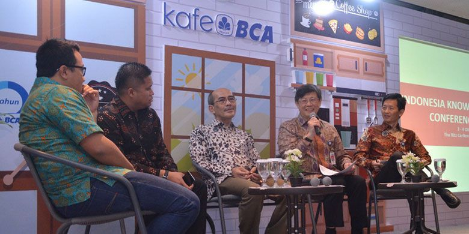

IKF VI Dukung Inovasi dan Kreativitas berbasis Digital
KabarKabur.com - 25/09/2017, 20:04 WIB

-(-)
Era digitalisasi sudah melekat ke dalam sendi-sendi kehidupan masyarakat modern. Beragam kalangan tanpa memandang usia maupun jenis kelamin telah akrab dengan kecanggihan teknologi, melalui aplikasi, fitur, maupun layanan sehari-hari yang kian memudahkan pekerjaan dan membuat segalanya terasa efisien. Para pelaku usaha maupun regulator turut menentukan keberhasilan penerapan teknologi muktahir tersebut, termasuk industri perbankan.
Dalam forum Kafe BCA VII yang diadakan di Breakout Area Menara PT Bank Central Asia (BCA), Direktur BCA Henry Koenaifi mengungkapkan inovasi dan kreativitas merupakan tulang punggung dalam mendirikan usaha berbasis digital. Setiap orang bisa saja menjadi pelaku usaha rintisan berbasis digital, dengan mengandalkan kemudahan dan kemutakhiran perkembangan teknologi saat ini. Namun, tidak semua memiliki ide bisnis yang dapat memberikan nilai tambah bagi masyarakat dan memberikan keuntungan ekonomis untuk kesinambungan usahaHadir pula dalam acara tersebut, pengamat ekonomi Faisal Basri, pelaku startup Indra Wiralaksmana (Country Head & Director Ninja Xpress), Rama Mamuaya (Founder & CEO DailySocial.id), dan Hermawan Thendean (Senior Executive Vice President of Strategic Information Technology BCA). Henry menambahkan, dari sisi perbankan, BCA juga senantiasa melakukan berbagai inovasi dalam solusi dan layanan perbankan berbasis digital yang memberikan kemudahan pelayanan dan transaksi kepada nasabah. Hal ini dilakukan semata-mata karena prioritas BCA adalah memberikan pelayanan terbaik kepada nasabah, sesuai dengan perkembangan saat ini. “Era makin berubah ke arah digital, dan BCA siap menjemput perubahan ini dengan mengeluarkan berbagai produk layanan berbasis teknologi yang memungkinkan nasabah menggunakannya secara aman dan nyaman,” kata dia.Pesatnya pertumbuhan pelaku financial technology (fintech) ataupun e-commerce telah memunculkan kebutuhan masyarakat terhadap layanan informasi dan transaksi keuangan perbankan. Sebagai contoh dalam praktiknya, pelaku fintech ataupun e-commerce membutuhkan konektivitas sistem yang solid dengan dunia perbankan agar transaksi pembayaran pengguna aplikasi atau situs mereka dapat berjalan dengan lancar.Untuk startup, berlandaskan catatan Center for Human Genetic Research (CHGR), pada 2016 Indonesia tercatat sebagai negara yang memiliki jumlah startup tertinggi di Asia Tenggara, yakni 2.000-an. Pada 2020, diperkirakan startup tumbuh mencapai 13.000.Bank Indonesia menegaskan, selama 2016, para pengguna jasa perdagangan daring atau e-commerce tersebut telah membelanjakan 5,6 miliar dollar AS atau sekitar Rp 75 triliun. Atau jika dibagi per individu pengguna e-commerce di Indonesia rata-rata membelanjakan Rp 3 juta per tahun.“Beberapa fakta-fakta tersebut yang mendorong BCA mengangkat tema Elevating Creativity & Innovation Through Digital Collaboration dalam pelaksanaan Indonesia Knowledge Forum (IKF) VI. Dalam pelaksanaan pesta akbar pengetahuan yang diharapkan menjadi One Stop Knowledge Solution ini, BCA akan menghadirkan serangkaian expo dan exhibition yang diikuti oleh exhibitor berupa startup dan penyedia pengetahuan teknologi terpilih. Tujuannya memberikan inspirasi dan pengetahuan untuk memajukan dunia usaha Indonesia,” ujar Henry.IKF VI yang akan diselenggarakan pada 3-4 Oktober 2017 di The Ritz Carlton Pacific Place, Jakarta ini akan menghadirkan Rudiantara* selaku Menteri Komunikasi dan Informatika Republik Indonesia sebagai keynote speaker.Selama dua hari, sebanyak 23 pembicara yang kompeten di bidangnya baik dari dalam maupun luar negeri, akan turut berpartisipasi untuk berbagi ilmu, pengalaman serta inspirasi dalam mengembangkan dunia bisnis berbasis digital. Di antaranya Pengamat Ekonomi Faisal Basri, CEO PT McKinsey Indonesia Philia Wibowo*, Celebrity Investor Ashraf Sinclair, Founder and Managing of Kejora Group Sebastian Togelang, dan Menteri Energi dan Sumber Daya Mineral Ignasius Jonan* yang akan memberikan inspiring closing speech pada akhir penyelenggaraan kegiatan. Informasi lebih lanjut terkait kegiatan IKF dapat mengunjungi www.bcalearningservice.com